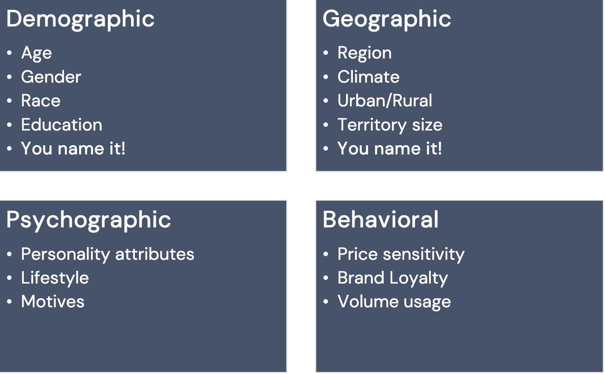
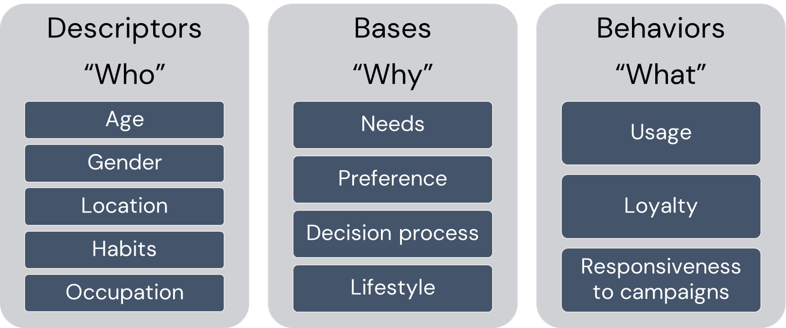

import pandas as pd
import numpy as np
import plotly.express as px
import plotly.graph_objects as go
pd.set_option('display.max_columns', None)
px.defaults.template = "plotly_white"Session 09: Customer Segmentation | RFM
Plotly
Data Visualization
Segmentation
RFM
RFM
Downloading the Data
Before starting this exercise first let’s download the data, which you can find here
Tip
Try to download this data the way have learnt during the previous sessions.
Let’s also try to create a function named csv_downloader(URL, name, path) which will take URL, name and path as an arguments
URL = 'https://raw.githubusercontent.com/hovhannisyan91/data_analytics_with_python/refs/heads/main/data/rfm/orders.csv'
df = pd.read_csv(URL)csv_downloader()
def csv_downloader(URL:str, name:str, path:str)->pd.Dataframe:
df = pd.read_csv(URL)
df.to_csv(f'{path}/{name}.csv', index = False)
print(f'The {name}.csv was successfully stored in {path}')
return dfNow we can use this to make our operations faster and efficient.
csv_downloader(URL = URL, name = 'orders',path = '../data')Customer Segmentation
Customer segmentation can be defined as the practice of dividing a customer base into groups of individuals that are similar in specific ways relevant to marketing.

Segmentation assumes:
- Identify segmentation bases and segment the market
- Develop a profile of the resulting segments

Why Segment Customers?
In short For differentiation!
In Marketing and Service:
- Make more focused/targeted marketing
- Identify the most profitable and at-risk customers
- Build relationships
- Create user personas
In Product and Brand:
- Brand to appeal to particular segments
- Customize products and services
- Predict future purchasing patterns
In Pricing:
- Pricing products by groups
- Determine willingness to pay for optimal value
What is RFM
RFM (recency, frequency, monetary) analysis is a behavior-based technique used to segment customers by examining their transaction history.
- how recently a customer has purchased (Recency)
- how often they purchase (Frequency)
- how much the customer spends (Monetary)
RFM model is a straightforward yet effective method for segmentation, especially in retail.
RFM helps to identify customers who are more likely to respond to promotions by segmenting them into various categories.
The Components of RFM
- A Recency Score is assigned to each customer based on the most recent purchase date. The score is generated by binning the recency values into several categories. For example, suppose one uses four categories. In that case, the customers with the most recent purchase dates receive a recency ranking of 4, and those with purchase dates in the distant past receive a recency ranking of 1.
- A Frequency Score is assigned similarly. Customers with high purchase frequency are assigned a higher score (4 or 5), and those with the lowest frequency score are assigned 1.
- A Monetary Score is assigned based on the total revenue generated by the customer in the period under consideration for the analysis. Customers with the highest revenue or order amount are assigned a higher score, while those with the lowest ones are assigned a score of 1.
RFM Score
RFM score is generated by simply combining the above mentioned components or scores into a single value.
RFM Score could be calculated as:
- Average of the three scores
- Weighted average
- Simple concatenation
Loading Packages and Data
orders = pd.read_csv('../data/rfm/orders.csv', parse_dates=['order_date'])
orders.head()| customer_id | order_date | revenue | |
|---|---|---|---|
| 0 | Mr. Brion Stark Sr. | 2004-12-20 | 32 |
| 1 | Ethyl Botsford | 2005-05-02 | 36 |
| 2 | Hosteen Jacobi | 2004-03-06 | 116 |
| 3 | Mr. Edw Frami | 2006-03-15 | 99 |
| 4 | Josef Lemke | 2006-08-14 | 76 |
Revenue Distribution
fig = px.histogram(
orders,
x='revenue',
nbins=30,
title='Histogram of Revenue'
)
fig.update_layout(
xaxis_title='Revenue',
yaxis_title='Count'
)
fig.show()R, F, M Scores
Let us create R, F, and M columns.
max_date = orders['order_date'].max()
rfm = orders.groupby('customer_id').agg(
{
'order_date': lambda date: (max_date - date.max()).days,
'customer_id': lambda num: len(num),
'revenue': lambda price: price.sum()
}
)
rfm.columns = ['Recency', 'Frequency', 'Monetary']
rfm.reset_index(inplace=True)
rfm.head()| customer_id | Recency | Frequency | Monetary | |
|---|---|---|---|---|
| 0 | Abbey O'Reilly DVM | 204 | 6 | 472 |
| 1 | Add Senger | 139 | 3 | 340 |
| 2 | Aden Lesch Sr. | 193 | 4 | 405 |
| 3 | Admiral Senger | 131 | 5 | 448 |
| 4 | Agness O'Keefe | 89 | 9 | 843 |
Important
Think about a reasons we used lambda function…
Let us create 5 categories based on the quartiles for each RFM variable using pd.qcut() method
rfm['R'] = pd.qcut(rfm['Recency'], 4, ['4', '3', '2', '1'])
rfm['F'] = pd.qcut(rfm['Frequency'], 4, ['1', '2', '3', '4'])
rfm['M'] = pd.qcut(rfm['Monetary'], 4, ['1', '2', '3', '4'])
Important
Pay attention to the order of Frequency \((\downarrow)\).
RFM Scores and Distributions
rfm.head()| customer_id | Recency | Frequency | Monetary | R | F | M | |
|---|---|---|---|---|---|---|---|
| 0 | Abbey O'Reilly DVM | 204 | 6 | 472 | 3 | 3 | 3 |
| 1 | Add Senger | 139 | 3 | 340 | 3 | 1 | 2 |
| 2 | Aden Lesch Sr. | 193 | 4 | 405 | 3 | 2 | 2 |
| 3 | Admiral Senger | 131 | 5 | 448 | 4 | 2 | 3 |
| 4 | Agness O'Keefe | 89 | 9 | 843 | 4 | 4 | 4 |
Distributions of R, F, M
from plotly.subplots import make_subplots
import plotly.graph_objects as go
fig = make_subplots(
rows=1,
cols=3,
subplot_titles=("Recency", "Frequency", "Monetary")
)
fig.add_trace(
go.Histogram(x=rfm["Recency"], nbinsx=30, name="Recency"),
row=1,
col=1
)
fig.add_trace(
go.Histogram(x=rfm["Frequency"], nbinsx=30, name="Frequency"),
row=1,
col=2
)
fig.add_trace(
go.Histogram(x=rfm["Monetary"], nbinsx=30, name="Monetary"),
row=1,
col=3
)
fig.update_layout(
title="",
showlegend=False
)
fig.update_xaxes(title_text="Recency", row=1, col=1)
fig.update_xaxes(title_text="Frequency", row=1, col=2)
fig.update_xaxes(title_text="Monetary", row=1, col=3)
fig.update_yaxes(title_text="Count", row=1, col=1)
fig.update_yaxes(title_text="Count", row=1, col=2)
fig.update_yaxes(title_text="Count", row=1, col=3)
fig.show()RFM Score and RFM Segment
- RFM Segments: converting
R,F,Mscores to string and concatenating - RFM Score: sum of the
R,F,Mscores
rfm['RFM_Score'] = rfm.R.astype(int) + rfm.F.astype(int) + rfm.M.astype(int)
rfm['RFM_Segment'] = rfm.R.astype(str) + rfm.F.astype(str) + rfm.M.astype(str)
rfm.head()| customer_id | Recency | Frequency | Monetary | R | F | M | RFM_Score | RFM_Segment | |
|---|---|---|---|---|---|---|---|---|---|
| 0 | Abbey O'Reilly DVM | 204 | 6 | 472 | 3 | 3 | 3 | 9 | 333 |
| 1 | Add Senger | 139 | 3 | 340 | 3 | 1 | 2 | 6 | 312 |
| 2 | Aden Lesch Sr. | 193 | 4 | 405 | 3 | 2 | 2 | 7 | 322 |
| 3 | Admiral Senger | 131 | 5 | 448 | 4 | 2 | 3 | 9 | 423 |
| 4 | Agness O'Keefe | 89 | 9 | 843 | 4 | 4 | 4 | 12 | 444 |
Finding Top Customers
Sorting RFM_Segment in descending order, we will get the list of top customers.
rfm = rfm.sort_values('RFM_Segment', ascending=False)
rfm.head()| customer_id | Recency | Frequency | Monetary | R | F | M | RFM_Score | RFM_Segment | |
|---|---|---|---|---|---|---|---|---|---|
| 4 | Agness O'Keefe | 89 | 9 | 843 | 4 | 4 | 4 | 12 | 444 |
| 5 | Aileen Barton | 83 | 9 | 763 | 4 | 4 | 4 | 12 | 444 |
| 40 | Ariel Yundt | 125 | 10 | 1069 | 4 | 4 | 4 | 12 | 444 |
| 50 | Aurthur Kirlin II | 115 | 9 | 856 | 4 | 4 | 4 | 12 | 444 |
| 51 | Auther Haley | 56 | 9 | 878 | 4 | 4 | 4 | 12 | 444 |
Number of RFM Segments
rfm_segments = rfm.groupby('RFM_Segment').count().reset_index(level=0)
rfm_segments.head()| RFM_Segment | customer_id | Recency | Frequency | Monetary | R | F | M | RFM_Score | |
|---|---|---|---|---|---|---|---|---|---|
| 0 | 111 | 90 | 90 | 90 | 90 | 90 | 90 | 90 | 90 |
| 1 | 112 | 31 | 31 | 31 | 31 | 31 | 31 | 31 | 31 |
| 2 | 113 | 6 | 6 | 6 | 6 | 6 | 6 | 6 | 6 |
| 3 | 121 | 11 | 11 | 11 | 11 | 11 | 11 | 11 | 11 |
| 4 | 122 | 29 | 29 | 29 | 29 | 29 | 29 | 29 | 29 |
fig = px.bar(
rfm_segments.sort_values('customer_id'),
x='customer_id',
y='RFM_Segment',
orientation='h',
title='Number of Customers by RFM Segment'
)
fig.update_layout(
xaxis_title='Number of Customers',
yaxis_title='RFM Segment'
)
fig.show()Naming the Segments
The next step for customer segmentation is naming those very segments. The number of segments depends on the scope of the marketing campaign. Here naming() function just contains a set of conditional rules, which comes from classical segmentation.
def naming(df):
if df['RFM_Score'] >= 9:
return 'Can\'t Loose Them'
elif ((df['RFM_Score'] >= 8) and (df['RFM_Score'] < 9)):
return 'Champions'
elif ((df['RFM_Score'] >= 7) and (df['RFM_Score'] < 8)):
return 'Loyal/Commited'
elif ((df['RFM_Score'] >= 6) and (df['RFM_Score'] < 7)):
return 'Potential'
elif ((df['RFM_Score'] >= 5) and (df['RFM_Score'] < 6)):
return 'Promising'
elif ((df['RFM_Score'] >= 4) and (df['RFM_Score'] < 5)):
return 'Requires Attention'
else:
return 'Demands Activation'Now let us apply the above-defined function by creating Segment_Name column.
rfm['Segment_Name'] = rfm.apply(naming, axis=1)
rfm.head(5)| customer_id | Recency | Frequency | Monetary | R | F | M | RFM_Score | RFM_Segment | Segment_Name | |
|---|---|---|---|---|---|---|---|---|---|---|
| 4 | Agness O'Keefe | 89 | 9 | 843 | 4 | 4 | 4 | 12 | 444 | Can't Loose Them |
| 5 | Aileen Barton | 83 | 9 | 763 | 4 | 4 | 4 | 12 | 444 | Can't Loose Them |
| 40 | Ariel Yundt | 125 | 10 | 1069 | 4 | 4 | 4 | 12 | 444 | Can't Loose Them |
| 50 | Aurthur Kirlin II | 115 | 9 | 856 | 4 | 4 | 4 | 12 | 444 | Can't Loose Them |
| 51 | Auther Haley | 56 | 9 | 878 | 4 | 4 | 4 | 12 | 444 | Can't Loose Them |
Segment Distribution
grouped_by = rfm.groupby('Segment_Name').agg({
'Recency': 'mean',
'Frequency': 'mean',
'Monetary': ['mean', 'count']
}).round(1)Segments’ Distribution
grouped_by| Recency | Frequency | Monetary | ||
|---|---|---|---|---|
| mean | mean | mean | count | |
| Segment_Name | ||||
| Can't Loose Them | 166.6 | 7.2 | 707.2 | 335 |
| Champions | 212.0 | 5.0 | 489.6 | 114 |
| Demands Activation | 600.5 | 1.9 | 151.0 | 90 |
| Loyal/Commited | 275.5 | 4.7 | 429.3 | 147 |
| Potential | 286.8 | 3.9 | 352.1 | 132 |
| Promising | 361.4 | 3.4 | 294.8 | 97 |
| Requires Attention | 460.7 | 2.8 | 246.0 | 80 |
Segments’ Visualization
Using Plotly, we can visualize segments with a treemap.
grouped_by.columns = ['RecencyMean', 'FrequencyMean', 'MonetaryMean', 'Count']
grouped_by = grouped_by.reset_index()
grouped_by| Segment_Name | RecencyMean | FrequencyMean | MonetaryMean | Count | |
|---|---|---|---|---|---|
| 0 | Can't Loose Them | 166.6 | 7.2 | 707.2 | 335 |
| 1 | Champions | 212.0 | 5.0 | 489.6 | 114 |
| 2 | Demands Activation | 600.5 | 1.9 | 151.0 | 90 |
| 3 | Loyal/Commited | 275.5 | 4.7 | 429.3 | 147 |
| 4 | Potential | 286.8 | 3.9 | 352.1 | 132 |
| 5 | Promising | 361.4 | 3.4 | 294.8 | 97 |
| 6 | Requires Attention | 460.7 | 2.8 | 246.0 | 80 |
fig = px.treemap(
grouped_by,
path=['Segment_Name'],
values='Count',
color='MonetaryMean',
hover_data=['RecencyMean', 'FrequencyMean', 'MonetaryMean'],
title='RFM Segments'
)
fig.show()